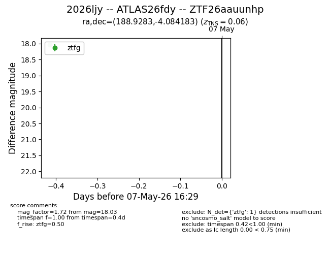
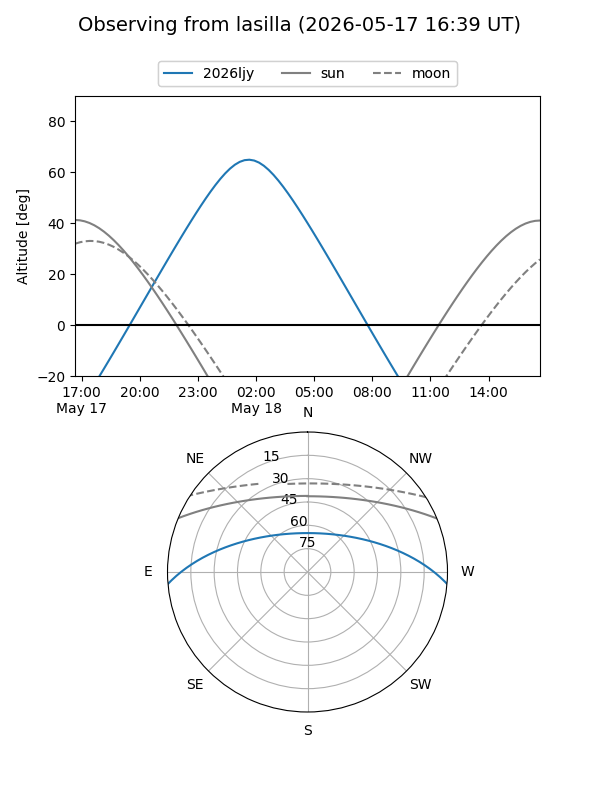
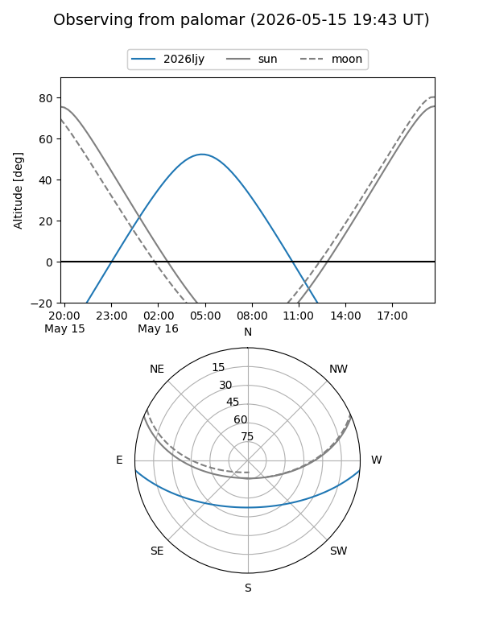
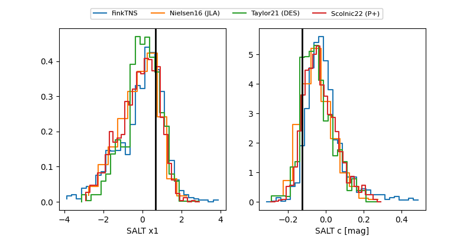

2026ljy
Target 2026ljy at 2026-05-07 16:31
Aliases and brokers:
FINK: link
Lasair: link
ALeRCE: link
TNS: link
YSE: link
alt names
ZTF26aauunhp (ztf,fink_ztf)
2026ljy (tns,yse)
ATLAS26fdy (atlas)
Coordinates:
equatorial (ra, dec) = 188.9283,-4.08418
equatorial (HMS+DMS) = 12:35:42.79,-04:05:03.06
galactic (l, b) = (295.3992,+58.55739)
Flags:
confirmed ia
Photometry:
last ztfg=18.03
1 ztfg detections
Lightcurve

Visibility


Additional plots
